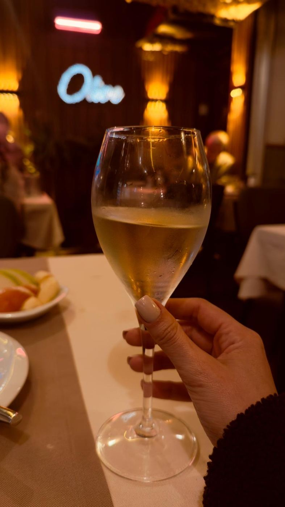
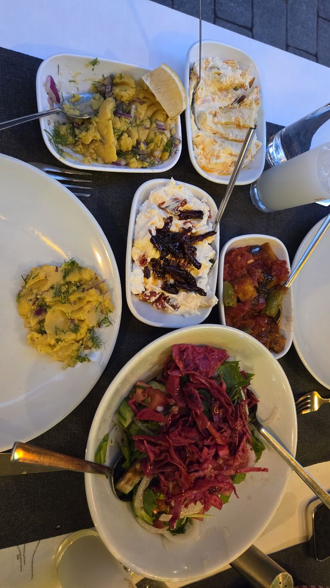
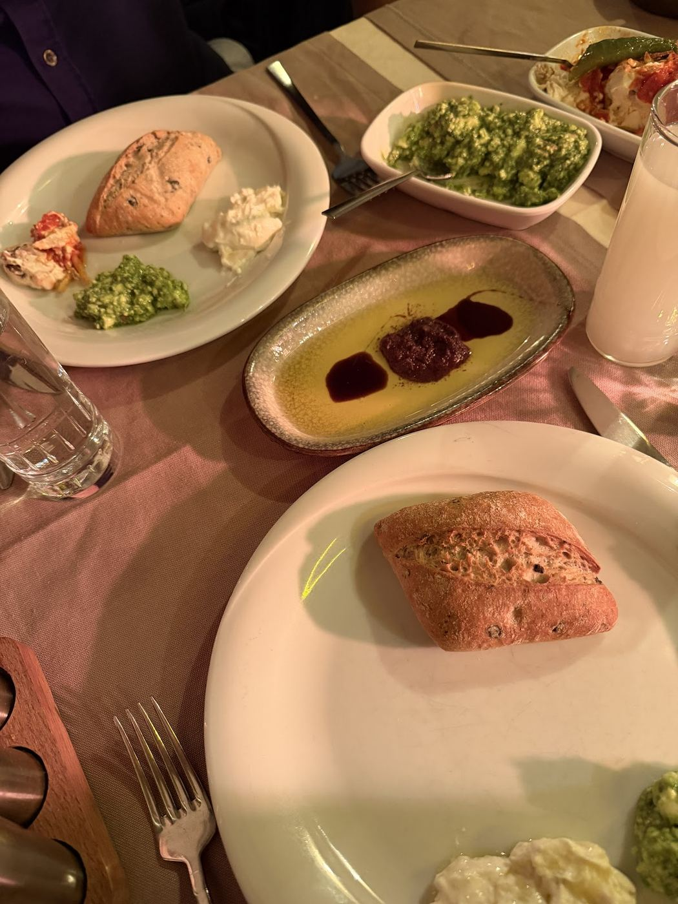
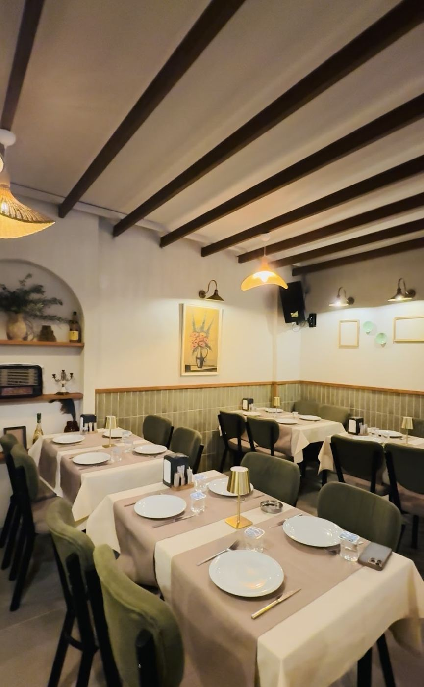

Sofra akşamdan kurulur, gece üçe kadar sürer.
Alsancak'ta beyaz örtülü masalar, kapıda bir meze dolabı ve akşam ilerledikçe yükselen bir fasıl. Burada yemek bir öğün değil, bir geceye yayılan iş.
Meze dolabından ne seçtiğiniz akşamın nasıl geçeceğini belirler — bu yüzden acele ettirmiyoruz.
Dört perdelik bir akşam
Meyhane sofrasının kendi düzeni vardır. Tabaklar ortaya gelir, sıra bozulmaz.
-
01
Zeytinyağlı ve ekmek
Oturur oturmaz gelir: zeytinyağlı tabağı ve sıcak ekmek. İstenmez, gelir.
-
02
Mezeler
Dolaptan seçilir. Girit mezesi, haydari, deniz börülcesi — masaya kaç kişi varsa o kadar tabak.
-
03
Ara sıcaklar
Susamlı çıtır tulum peyniri, ciğer tava, kalamar. Rakı burada devreye girer.
-
04
Ana yemek ve tatlı
Izgaradan Adana ya da uykuluk, ardından tatlı. Fasıl bu saatlerde en yüksek yerindedir.


Menüye bakmadan önce dolaba bakılır
Meyhanenin adabı budur: kapıdan girince önce meze dolabına gidilir, gözle seçilir, tabak masaya öyle gelir. Ne varsa camın arkasındadır — anlatmaya gerek kalmaz.
Dolabın içi mevsime göre değişir, o yüzden aynı iki akşam olmaz.
Bizim değil, onların cümleleri
4,7 708 Google değerlendirmesi
“Başlangıçta gelen zeytinyağlı tabağa ve ekmeklere bayıldım. Susamlı çıtır tulum peyniri çok iyiydi.”
“Fix menü tercih ettik, oldukça doyurucu. Girit meze özellikle çok güzel.”
“Mezeleri, ara sıcakları, ana yemekleri ve hatta tatlısıyla bile ayrı konuşulması gereken bir yer.”
Alsancak
- Adres Alsancak, İzmir 35220 Konak / İzmir
- Saatler Akşam — 03:00 Mutfak kapanıştan önce son siparişi alır
- Müzik Canlı fasıl
- Servis Salon · fix menü ve alakart
Hafta sonları ve fasıl akşamları için rezervasyon öneririz. Kalabalık gruplar için lütfen önceden yazın.